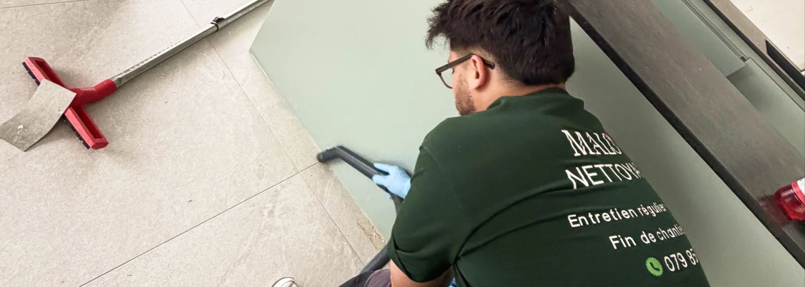

- 3 situations qui exigent un pro : pose de carrelage neuf, rénovation cuisine/toilettes, gros chantier
- Raison n°1 : le carreleur lui-même recommande souvent un décapage professionnel
- Raison n°2 : la poussière fine est nocive pour les voies respiratoires
- Raison n°3 : la désinfection en profondeur ne s'improvise pas
- Quand appeler : idéalement avant emménagement, logement encore vide
Le contexte typique : la rénovation chez soi
Trois scénarios reviennent en permanence chez les propriétaires que nous accompagnons :
- L'achat d'une maison à rénover entièrement avant emménagement
- La maison familiale héritée qui nécessite une grosse remise à neuf
- La rénovation partielle ou totale via un architecte (cuisine, salle de bain, sols)
Dans tous ces cas, les travaux se terminent par une étape souvent sous-estimée : le nettoyage final. C'est précisément à ce moment-là que beaucoup de propriétaires se rendent compte que ce n'est pas aussi simple qu'un grand ménage habituel.
Votre nettoyage de fin de chantier, pris en charge de A à Z
Matériel professionnel · Résultat garanti
Voir le service fin de chantier →Pourquoi le nettoyage classique ne suffit pas après rénovation
Un nettoyage de fin de chantier n'a rien à voir avec un ménage courant. Trois différences techniques expliquent pourquoi.
1. La poussière de chantier est microscopique et reste en suspension
Plâtre, ciment, bois poncé, peinture en aérosol : les particules générées par les travaux sont invisibles à l'œil nu mais bien réelles. Elles restent dans l'air pendant 48 à 72 heures et se redéposent en continu sur les surfaces.
- Irritation des yeux et de la gorge
- Aggravation des allergies
- Risque pour les poumons sur le long terme, en particulier chez les enfants
2. Les résidus solides ne partent pas au chiffon
Traces de peinture séchée, points de colle, plâtre durci, joints silicone débordants : ces résidus demandent des outils spécifiques (spatule, grattoir, produits ciblés) et une vraie méthode pour ne pas abîmer la surface en dessous.
3. La couche de ciment s'incruste dans les sols neufs
C'est le piège le plus connu après une pose de carrelage. Une fine couche de poussière de ciment s'imprime dans la surface du sol, invisible quand le carrelage est mouillé, mais réapparaissant en voile blanchâtre dès qu'il sèche. Seul un décapage avec un produit adapté retire cette couche.
Les 3 situations qui justifient un pro
Après une pose de carrelage neuf (sols ou murs)
C'est la situation la plus fréquente où le carreleur lui-même recommande un professionnel.
| Problème | Conséquence sans décapage pro |
|---|---|
| Voile de ciment sur le carrelage | Sol blanchâtre, terne, mat |
| Joints encrassés de poussière | Aspect sale dès l'emménagement |
| Résidus de colle sur la surface | Risque de rayures en frottant |
| Joints silicone débordants | Aspect non professionnel |
Après une rénovation de cuisine
Une cuisine refaite à neuf concentre tous les types de saletés de chantier :
- Poussière de plâtre dans les placards intégrés
- Résidus de colle de plan de travail
- Traces de mastic et silicone autour de l'évier
- Graisse de découpe et copeaux de bois
- Poussière fine dans la hotte neuve avant même utilisation
Après une rénovation de toilettes ou salle de bain
C'est la pièce la plus délicate, car elle nécessite à la fois nettoyage et désinfection. Une rénovation de salle de bain laisse :
- Calcaire et résidus sur la robinetterie neuve
- Traces de joint silicone autour du WC, lavabo, douche
- Poussière de carrelage dans les joints frais
- Résidus de produits de pose dans la cuvette ou le siphon

Pourquoi les artisans eux-mêmes recommandent un pro
Pour préserver la qualité de leur travail
Un mauvais nettoyage peut abîmer une surface fraîchement posée. Carrelage rayé, joints frais détériorés, vernis de parquet altéré : autant de risques que l'artisan ne veut pas voir se concrétiser après son intervention.
Parce qu'ils connaissent leurs limites
Un carreleur n'est pas un professionnel du nettoyage, et vice-versa. Chaque métier a sa technique, ses produits, son matériel. Un carreleur livre un sol propre, mais le décapage final demande une expertise différente.
Pour éviter les litiges après livraison
Quand un client tente de nettoyer lui-même et obtient un résultat décevant, il a tendance à se retourner vers l'artisan. Recommander un professionnel du nettoyage protège la livraison du chantier.
Comment se passe l'intervention
| Étape | Détail |
|---|---|
| 1. Premier contact | Téléphone, email ou formulaire — réponse sous 24h |
| 2. Visite ou photos | Évaluation des surfaces, de l'état et des besoins |
| 3. Devis personnalisé | Prix fixe écrit, prestations détaillées |
| 4. Intervention | Matériel pro (aspirateur HEPA, aspirateur à eau, produits) |
| 5. Contrôle qualité | Inspection ensemble ou par photos |
| 6. Remise des clés | Logement prêt à habiter, immédiatement |
Quand prendre contact avec une entreprise de nettoyage
Idéalement : avant l'emménagement, logement vide
C'est la situation parfaite. Tous les recoins sont accessibles, aucun meuble ne gêne le décapage des sols. Le résultat est nettement supérieur à un nettoyage fait après emménagement.
Au plus tard : juste après la fin des travaux
Plus le temps passe entre la fin du chantier et le nettoyage, plus les résidus durcissent. Une peinture séchée, une trace de colle ancienne, un voile de ciment incrusté depuis des semaines : tout cela complique le travail.
Trop tard : après emménagement avec meubles
C'est possible, mais le résultat est toujours inférieur. Les zones sous les meubles restent inaccessibles, et la poussière fine continue de se déposer pendant des jours.
FAQ – Entreprise de nettoyage fin de chantier
Pourquoi un carreleur recommande-t-il une entreprise de nettoyage après sa pose ?
Parce qu'un nettoyage classique n'enlève pas le voile de ciment qui s'incruste dans le carrelage après pose. Sans décapage professionnel, le sol reste terne et blanchâtre, ce qui dévalorise tout le travail du carreleur.
Quels travaux justifient vraiment un nettoyage professionnel de fin de chantier ?
Trois situations principalement : la pose de carrelage neuf, la rénovation complète d'une cuisine ou d'une salle de bain, et tout gros chantier générant beaucoup de poussière (ponçage, démolition, plâtre).
Combien coûte un nettoyage de fin de chantier en Suisse romande ?
Le coût dépend de la surface, du type de revêtement et du niveau d'encrassement. Le tarif se calcule généralement au m² ou au forfait. Un devis personnalisé est indispensable — privilégiez les entreprises qui proposent un prix fixe écrit, sans frais cachés.
Faut-il être présent pendant le nettoyage de fin de chantier ?
Pas nécessairement. La plupart des propriétaires confient les clés à l'entreprise et reçoivent des photos avant/après. Un contrôle qualité ensemble peut se faire en fin d'intervention si souhaité.
Combien de temps prend un nettoyage fin de chantier pour une rénovation complète ?
Pour une cuisine ou une salle de bain rénovée, comptez une demi-journée à une journée. Pour un appartement entier après gros travaux, prévoyez 1 à 2 journées complètes.
En résumé
Une entreprise de nettoyage fin de chantier devient indispensable après trois types de rénovation : pose de carrelage neuf, rénovation de cuisine ou toilettes, et tout gros chantier générant de la poussière fine. Le nettoyage classique ne suffit pas car il ne retire ni le voile de ciment incrusté, ni les particules nocives en suspension. Les artisans eux-mêmes recommandent ce passage pour préserver la qualité de leur travail et garantir une livraison à la hauteur de l'investissement.